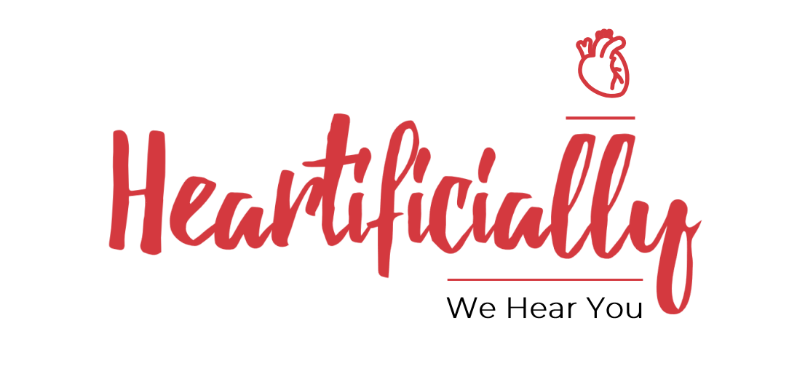

|  |
HEARTIFICALLY
we hear you
|
The Problem
“17.9 Million people die each year from CVD’s (10% from India), an estimated 31% of all deaths worldwide” - WHO
- Cardio Vascular Diseases(CVDs) are the number one cause of mortality and morbidity globally as access to Healthcare is a major problem.
- It is difficult for Doctors currently to access the health parameters and compliance of a CVD patient on a long�term basis.
- No dedicated Digital ecosystem for CVD patients and no platform that provides awareness on life supporting measures during emergencies.
- It is estimated that a severe CVD patient spends around 3 to 5 Lakh INR per year and 40,000 INR for a non severe patient per year.
The Solution
“HEARTIFICIALLY is a one stop destination for every CVD patient to heal/improve/enhance his heart health and live a happy life. There’s no looking back”
HEARTIFICIALLY
Heartificially is a Digital Therapeutics app, where we are creating a Digital Ecosystem for people suffering
from Cardio Vascular Diseases. Using our App, customers get a Heartificial Care that is on par with Doctor led
care for CVD’s.
WHAT WE DO
- We provide a personalized and curated Lifestyle Routine for each and every individual that transforms their
Heart health. We do this by real time analysis of Heart parameters with add-ons like Smart wearables.
- We take care of all the parameters right from Nutrition, Fitness, Stress, Supplements/Medications and
Sleep activity to help them live a Healthy life.
VALUE PROPOSITION
- Self-reliant and reduces the frequency of Hospitalization/Doctor consultation.
- The freedom of Lifestyle. (We want to show alternatives for all the Lifestyle limitations and restrictions the patients face from doctors and society).
- Access to Healthcare in the Palm of your hand.
COMPETITIVE LANDSCAPE
“Since there are many Healthcare apps in the market, we compared our app with QARDIO and HF STAR only, because they are the only apps working on Heart health currently”
| factors |
Heartificially |
Qardio |
HF Star |
Design |
❤ |
❤ |
❤ |
Health Assistance |
❤ |
❤ |
❤ |
Additional Features |
❤ |
💔 |
💔 |
Affordability |
❤ |
💔 |
💔 |
Emergency Support |
❤ |
💔 |
💔 |